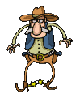

vamo, vamo, vamo…
Minha homenagem ao Dia do Homem – 15/VII/2010
Levando em consideração que somos resultado
de uma costela do homem, nada mais justo do que prestarmos
uma homenagem a eles criando o Dia Internacional do Homem.
Quem se veste como pingüim no dia do matrimônio?
O humilde homem!
Quem corre o risco de ser assaltado e morto na saída da boate,
cada vez que participa dessas reuniões noturnas com os amigos,
enquanto a mulher está bem segura em casa na sua caminha?
O desprotegido homem!
Quem é o encarregado de matar as baratas da casa?
O valente homem!  Quem apanha quando chega em casa com marca de batom na camisa
e é obrigado a dar explicações que nunca são aceitas?
O incompreendido homem!
Quem é que toma banho e se veste em menos de vinte minutos?
O ágil homem!
O ágil homem!
Quem é que tem de gastar consideráveis
somas em dinheiro comprando presentes para o dia das mães,
da esposa, da secretária e outras festas inventadas
pelo homem para satisfazer à mulher?
O generoso homem!
somas em dinheiro comprando presentes para o dia das mães,
da esposa, da secretária e outras festas inventadas
pelo homem para satisfazer à mulher?
O generoso homem!
Quem jamais conta uma mentira?
O ético homem!

O ético homem!
A tortura de ter que usar terno no verão?
O sofrido homem! O suplício de fazer a barba todo dia?
O sacrificado homem!
O sofrido homem! O suplício de fazer a barba todo dia?
O sacrificado homem!
O desespero de uma cueca apertada?
O mártir homem!
Ter sempre que resolver os problemas do seu carro
e de suas mulheres também?
O inteligente homem!
e de suas mulheres também?
O inteligente homem!
Ter a obrigação de ser um atleta sexual?
O vigoroso homem!
Ter que reparar que ela trocou a tintura do cabelo
de Imédia 13 para 731 louro bege salmon plus up light forever?
O observador homem!
de Imédia 13 para 731 louro bege salmon plus up light forever?
O observador homem!
Ter que jamais dizer que ela engordou,
mesmo que isto seja a pura verdade?
O leal homem!
mesmo que isto seja a pura verdade?
O leal homem!
Trabalhar prá caramba em prol de uma família
que reclama que você trabalha prá caramba?
O batalhador homem!
que reclama que você trabalha prá caramba?
O batalhador homem!
Quem tem que passar por TPM calado, todo mês?
O calmo homem!
O calmo homem!
Ter que agüentar a sogra que chega
para ficar três dias em casa e acaba ficando três meses?
O submisso homem!
Sem falar, de ter que bancar algumas mulheres,
todas as suas vaidades, frescuras, plásticas e outras cositas mais.
O Santo Homem!
Quem está lendo isso às escondidas para poder dar boas risadas,
já que se for surpreendido corre o risco de ser massacrado?
O indefeso homem!
já que se for surpreendido corre o risco de ser massacrado?
O indefeso homem!
Homens: Isto é uma brincadeira para que você possa
também sorrir conosco neste dia.
Fica aqui registrado toda nossa gratidão e respeito
e o reconhecimento de que sem vocês nada seriamos.
Amamos vocês!
.jpg "DSC01743 (1024x576)")
.jpg "DSC01780 (1024x576)")
.jpg "DSC01888 (1024x576)")
.jpg "DSC01900 (1024x576)")
.jpg "DSC01926 (1024x576)")


Muito bacana a homenagem, Ana. Informativa, principalmente, porque pouca gente sabe, ou me desmentiram de sacanagem, já não sei.
Comentário de Bastidore, a Ana Shibata tem post para fazer. Aguardem.
Dia do homem soa estranho. 🙂
Nós agradecemos a homenagem.